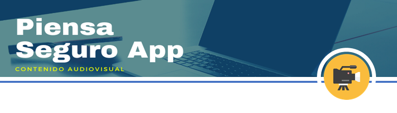

<ion-header>
  <ion-toolbar>
    <ion-buttons slot="start">
      <ion-back-button></ion-back-button>
    </ion-buttons>
    <ion-title>Análisis e identificación de servicios</ion-title>
  </ion-toolbar>
</ion-header>

<ion-content padding>

  <ion-card class="card-sizeD">
    
  </ion-card>

  <ion-card class="card-size1">
    <ion-card-content class="v-container">
      <div class="v-container2 iframe">
        <iframe src="https://www.youtube.com/embed/ZWX8n-2nFos" frameborder="0"
          allow="accelerometer; autoplay; encrypted-media; gyroscope; picture-in-picture" allowfullscreen></iframe>
      </div>
    </ion-card-content>

  </ion-card>

</ion-content>